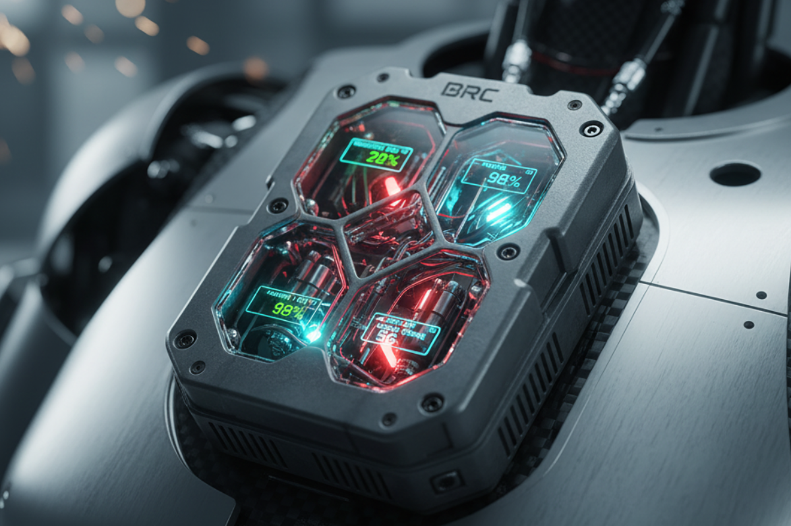

Executive Summary
Vision: Real-world, humanoid battle royale. The future of sporting entertainment. The Proving Ground for humanoids. BRC is a groundbreaking global premier league blending a real-life battle royale with cutting-edge humanoid robotics.
Match Format
HumanHeart
The league device on every unit that: authenticates the unit, streams telemetry and POV feeds, publishes a digital heartbeat, and triggers eliminations when rules are violated (e.g., no heartbeat for 120 seconds or out-of-bounds). Eliminations are physical decommission events to ensure verifiable outcomes while preventing human harm.
Global, remote, repeatable arenas
Initial host terrains: Saudi desert, Mongolian steppe, Argentine patagonia, USA canyonlands, Australian outback. Each Playa is temporarily built out with private 5G/6G mesh and satellite backhaul for resilient, low-latency control and broadcast.
Mesh + Satellite
Private 5G/6G mesh network spanning the Playa, with satellite backhaul for global streaming and teleoperation. Redundancy and latency monitoring are core league responsibilities.
Drone Fleet & Media Stack
Swarm drones, mast cameras, and on-bot POVs feed immersive AR/VR streams and traditional broadcast. Fans receive deep telemetry and choose POVs.
Fan Interaction
Timed "Fan Control" windows let audiences vote or bid to influence non-critical bot behaviors. Premium AR/VR access, microtransactions for virtual boosts, and collectible media moments create diversified monetization.
BRC sits at the intersection of traditional sports, esports, and robotics R&D. It converts high-stakes engineering into premium entertainment and a benchmarking ecosystem for humanoid development.
Primary revenue streams
Esports saturation
Digital battle royales offer massive scale but limited tangible stakes and declining engagement growth. Viewers crave visceral spectacle and real-world consequence.
Robotics fragmentation
Humanoid development is siloed. There is no high-profile, repeatable benchmark that accelerates outdoor, multi-agent capabilities in realistic conditions.
Content gap
Platforms need new IP that produces high retention and social virality. BRC creates shareable, dramatic moments with measurable outcomes.
Human safety is absolute. Playas are uninhabited and regulated in cooperation with host nations. The league defines equipment protocols and holds patents for the HumanHeart device, mesh-satellite integration, and fan-override APIs. Regulatory sandboxes and host-nation agreements are core to launch.
If you are a team, sponsor, broadcaster, or nation interested in hosting, reach out to: contact@battleroyalechampionship.com